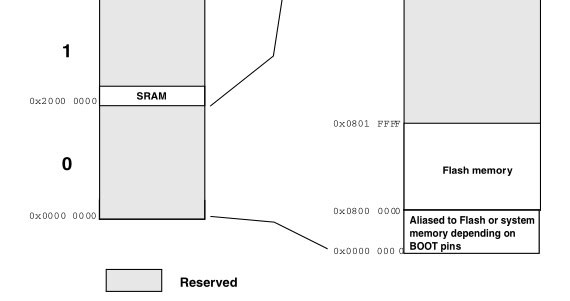
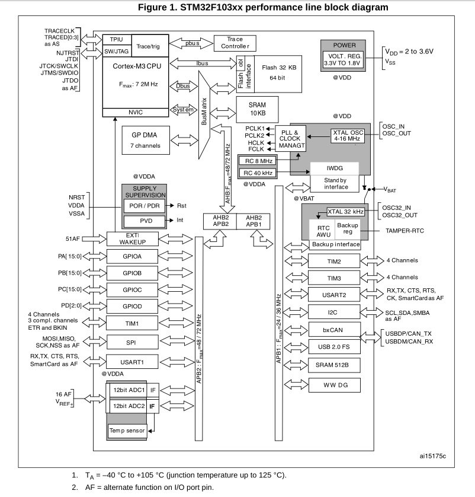
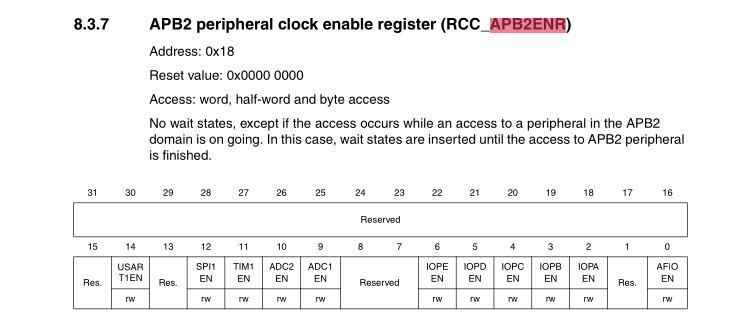
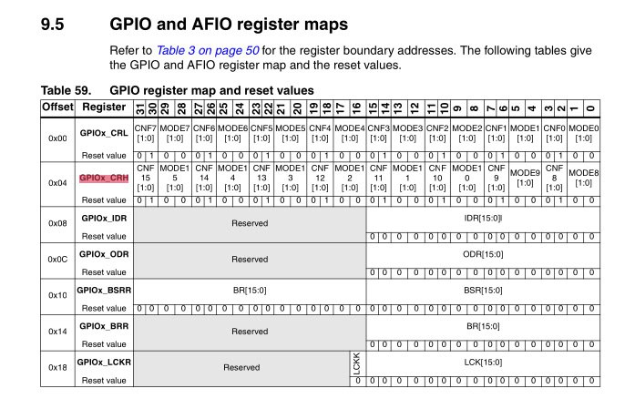
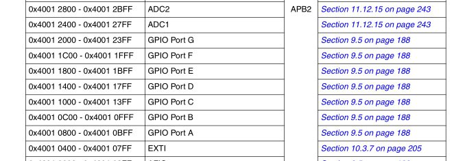

2025-10-18
16:08
Закончился первый модуль курса по C++ от Яндекс.Практикум
https://practicum.yandex.ru/cpp/
Сначала думал, что будет слишком легко и надо было сразу брать продвинутый, но нагрузка оказалась приличной. Вместе с работой едва успевал (даже сюда писать перестал), но за дедлайн не вышел
Первый модуль занимает 2.5 месяца + неделя каникул Темы: Весь базовый синтаксис + перегрузка функций и операторов, constexpr, шаблоны, лямбды, базовые STL контейнеры и алгоритмы, исключения + совсем немного по паттернам и тестам
Кроме того, один спринт отводится на изучение Qt (https://doc.qt.io/)
От Qt у людей пригорает, потому что мало того что тебе дают изучать язык, так еще и сверху Qt, у которого все свое (своя имплементация строк, контейнеров, итераторов, etc). Меня лично бесила необходимость рисовать интерфейсы
Но как первый фреймворк для изучения — он очень хорош. Batteries included, куча модулей на любой вкус и цвет
Работа с UI в Qt немного не в тренде. Вместо декларативного подхода все еще используется императивный, или, как вариант, можно накликать интерфейс в конструкторе
Собирается все без проблем и под Linux, и под Windows. Вроде как даже под Android можно собрать приложеньку, хотя с ходу я не понял как
Для установки под Windows придется пройти квест или купить VPN, потому что Qt не хочет обслуживать людей из РФ. А под Ubuntu просто sudo apt-get install qt6-base-dev qtcreator
#cpp #qt
23:34
Как результат первого модуля написал на Qt простенькое приложение-тренер
для занятий йогой (ну и чем угодно на самом деле). Таких немало в google
play store, но там реклама. Поэтому почему бы не написать свое в
качестве упражнения
https://github.com/bakineugene/yogapp
Набор упражнений задается через класс YogaSequence (https://github.com/bakineugene/yogapp/blob/main/yogasequence.h).
Само упражнение задается через пару
using YogaPose = std::pair<std::string, int>,
определяющую название (для путей к ассетам) и время на упражнение
На классе определены методы переключения вперед и назад по упражнениям. Упражнение переключится автоматически если выполнено два условия — закончило звучать звуковое сопровождение И истекло время на упражнение
Текущий элемент определен через итератор. Мне почему-то очень
понравились итераторы — в C++ это основной инструмент работы с
коллекциями. С помощью итератора можно перемещаться по коллекции, а
также получить текущий объект разыменованием *iterator (да,
как с указателями). Но у них есть минус — итератор может «протухнуть», и
пользователь об этом узнает только попытавшись разыменовать. Так что
разбрасываться итераторами нельзя — ими может безопасно пользоваться
только тот, кто владеет коллекцией (AFAIK)
Класс окошка (https://github.com/bakineugene/yogapp/blob/main/mainwindow.cpp) реализует работу таймера, плеера и отрисовки изображений
player:
player_.setAudioOutput(&audio_output_);
connect(&player_, &QMediaPlayer::mediaStatusChanged,
this, &MainWindow::OnPlayerFinish);
player_.setSource(QUrl{path});
player_.play();timer:
connect(&timer_, &QTimer::timeout, this, &MainWindow::OnTimer);
timer_.setInterval(pose.second);
timer_.start();Функция connect подписывает коллбек/хендлер (например
OnTimer) на событие (например timeout). Так бы сказали фронтендеры. Но в
Qt придумали свои названия — OnTimer это «слот», а timeout это «сигнал».
Не то чтобы очень важно, но интересно, что тут совсем другая
терминология
Картинки нарисовала Алиса, а текст озвучил яндексовый спичкит.
#cpp #qt #yoga
23:36
Video: (File exceeds maximum size. Change data exporting settings to download.)
23:36
16:50
Интересную методику прочел про “промптинг” для ИИ.
Мета-промпт (https://www.gptunnel.ru/en/guide/meta-prompting)
Вместо того, чтобы сочинять промпт - можно сочинить промпт, чтобы ИИ сам сочинил промпт 🤣
# Роль
Старший разработчик.
#Контекст
Собираешься выполнить задачу по разработке бота для телеграм и воспользоваться для этой цели ИИ.
# Задача
Создать простой телеграм-бот для управления таймерами.
# Технические требования
Язык программирования: Python 3.11.
Библиотека: aiogram (для работы с Telegram API).
# Функциональность
Команда /timer 10m — запускает таймер на 10 минут и отвечает «Таймер на 10 минут установлен».
Команда /cancel — отменяет активный таймер и отвечает «Таймер отменён».
По истечении времени бот автоматически пишет «Время вышло!».
# Ограничения
таймеры должны храниться в памяти (без использования базы данных).
# Задача
Составь промпт для ИИ бота в XML формате чтобы получить желаемый результатXML формат - тоже интересный элемент. Так финальный промпт легче копировать
Ну и, кстати, с написанием бота справилась даже Алиса/YandexGPT, хотя по моим субъективным оценкам она пока не дотягивает до deepseek/qwen
Бота можно тут потрогать, пока я его не снес @bakin_test_bot
P.S. Хотя даже в такой задаче ИИ сумел накосячить, но хоть как-то работает 🤣
#ai #telegram
22:50
Разбираюсь с кодом инициализации stm32 (форкнул репозиторий из поста
выше https://github.com/bakineugene/stm32-blink/)
This reference manual targets application developers. It provides complete information on how to use the STM32F101xx, STM32F102xx, STM32F103xx and STM32F105xx/STM32F107xx microcontroller memory and peripherals.Т.е. для разработки нужен RM, а за какой-то спецификой RM посылает в datasheet конкретной модели.
linker.ldMEMORY
{
FLASH (rx) : ORIGIN = 0x08000000, LENGTH = 32K
RAM (xrw) : ORIGIN = 0x20000000, LENGTH = 10K
}Они указаны в разделе memory map в даташите конкретной модели. На скриншоте можно найти данные для STM32F103C6
The STM32F103x4 and STM32F103x6 performance line family incorporates the high-performance ARM® Cortex™-M3 32-bit RISC core operating at a 72 MHz frequency, high-speed embedded memories (Flash memory up to 32 Kbytes and SRAM up to 6 Kbytes), and an extensive range of enhanced I/Os and peripherals connected to two APB buses. All devices offer two 12-bit ADCs, three general purpose 16-bit timers plus one PWM timer, as well as standard and advanced communication interfaces: up to two I2Cs and SPIs, three USARTs, an USB and a CAN.Периферия - это все, что не память и CPU. GPIO порты, таймеры, ADC, i2c, spi, usart и вообще все встроенное в чип, что может предложить конкретная модель stm32.
Вся периферия подключена через шины AHB и APB. Первая Advanced High-Performance Bus, вторая Advanced Peripheral Bus.
Для того чтобы работать с каким-то элементом периферии - его нужно настроить. Как минимум включить. По умолчанию все выключено. Включить периферию - означает “затактировать” ее. Т.е. начать подавать на нее тактирующие импульсы. После чего можно настроить работу самой периферии.
Для настройки мы обращаемся к некоторым блокам памяти, называемым регистрами. В STM32 регистры периферии обычно имеют размер 32 бита.
Регистры объединены в логические блоки. Начало каждого блока
регистров (его адрес) можно найти в разделе 3.3 Memory map
документа RM0008.
Например для настройки тактирования периферии используется блок
регистров RCC (0x40021000 -
Reset and clock control).
Пожалуй все на сегодня.
#stm32 #cmsis
22:51

22:52

22:52
22:52
12:40
Идем дальше
#define RCC_BASE 0x40021000
#define RCC_APB2ENR *(volatile uint32_t *)(RCC_BASE + 0x18)
#define RCC_IOPCEN (1 << 4)
RCC_APB2ENR |= RCC_IOPCEN;Откуда взялся RCC_BASE - уже понятно.
Поскольку задача - мигать встроенным в BluePill светодиодом (GPIOC 13), а GPIOx подключены к APB2 - нам нужен регистр управления тактированием для APB2 - называется RCC_APB2ENR.
Как видно тут можно сконфигурировать 5 портов - A, B, C, D, E. Но на самой blue pill светодиод подписан как PC13. Так понимаем, что он относится к порту C.
С этой схемы мы берем и 0x18 адрес регистра в блоке и смещение 4 для IOPC_EN
Переключая IOPC_EN в 1 - включаем тактирование для GPIOC порта
#stm32 #cmsis

23:09
Добрались до регистров, работающих с пинами.
CRL, CRH (Configuration Register Low/High) Первый отведен под конфигурацию для пинов с 0 по 7, второй для пинов с 8 по 15
Позволяет задать MODE (режим)
00: Input mode (reset state)
01: Output mode, max speed 10 MHz.
10: Output mode, max speed 2 MHz.
11: Output mode, max speed 50 MHz.Еще два бита позволяют задать конфигурацию
Для выхода (Output):
00: Push-Pull - можем подтянуть к земле/питанию
01: Open-Drain можем подтянуть к земле/подвесить в воздухеТаким образом здесь (https://github.com/bakineugene/stm32-blink/blob/master/blinky-no-lib/src/main.c)
Мы берем адрес блока регистров GPIOC из таблицы (0x40011000) Добавляем оффсет для GPIOx_CRH (0x04) CRH - т.к. там лежат настройки 13 пина
GPIOC_CRH &= 0xFF0FFFFF;
GPIOC_CRH |= 0x00200000;0x2 == 0b0011 00 == push-pull
11 == выход, частота 50 МГц
И устанавливаем для 13 пина режим “выход” + push-pull. Для целей мигания светодиодом подойдет любой из “выходных” режимов.
#stm32 #cmsis

23:09

23:34
Ну и еще два интересных порта (хотя для мигания на самом деле один)
Port input data register (GPIOx_IDR) (x=A..G) Address offset: 0x08h
Bits 15:0 IDRy[15:0]: Port input data (y= 0..15)
Port output data register (GPIOx_ODR) (x=A..G) Address offset: 0x0C
Bits 15:0 ODRy[15:0]: Port output data (y=0..15)IDR - для чтения (input) ODR - для записи (output)
Для мигания мы используем 13 бит “выходного” регистра.
#define GPIOC_ODR *(volatile uint32_t *)(GPIOC_BASE + 0x0C)
#define GPIOC13 (1UL << 13)
GPIOC_ODR |= GPIOC13;
for (int i = 0; i < 500000; i++)
; // arbitrary delay
GPIOC_ODR &= ~GPIOC13;
for (int i = 0; i < 500000; i++)
; // arbitrary delayИтого: платка опять мигает как и в прошлый раз. Но теперь я понимаю что там происходит. Так что теперь я залил ту же прошивку, но с уважением =)
#stm32 #cmsis Video: (File exceeds maximum size. Change data exporting settings to download.)
23:35
12:25
Следующий шаг - SPL (Standard Peripheral Library)
В каком-то виде можно найти на гитхабе, но там структура немного отличается https://github.com/dcmde/stm32f103_spl https://github.com/Derppening/stm32f103
Можно пройти квест с VPN и регистрацией и скачать у ST
https://www.st.com/en/embedded-software/stsw-stm32054.html#get-software
#stm32 #spl #stm32f10x
12:55
Discovering the STM32 Microcontroller
Достаточно глубокая, но доступная книга по SPL для STM32F1xx. Примечательно использование GNU Linux тулчейна.
11:43
Хотя прошлые посты я пометил как #cmsis - оказалось, что это не совсем
корректно.
CMSIS это набор стандартов для разработки кода под Cortex-M микроконтроллеры (https://www.arm.com/technologies/cmsis).
Т.е. включает в себя в том числе и набор инструментов для бутстрапа (https://github.com/Open-CMSIS-Pack/cmsis-toolbox/blob/main/README.md)
Со стороны ST есть как адаптация армового репозитория под нужды stm32 (https://github.com/STMicroelectronics/cmsis-core) Так и наборы “расширений” для конкретных семейств микроконтроллеров
Эти репозитории могут как использоваться самостоятельно, так и в рамках более масштабного иструмента под названием Stm32Cube (https://github.com/STMicroelectronics/STM32CubeF1)
Конкретно cmsis репозитории (https://github.com/STMicroelectronics/cmsis-device-f1) содержат: 1. Скрипт для линкера 2. Ассемблерный код для инициализации микроконтроллера 3. C код инициализации 4. Макросы и определения с адресами блоков регистров, регистров и бит
#cmsis #stm32